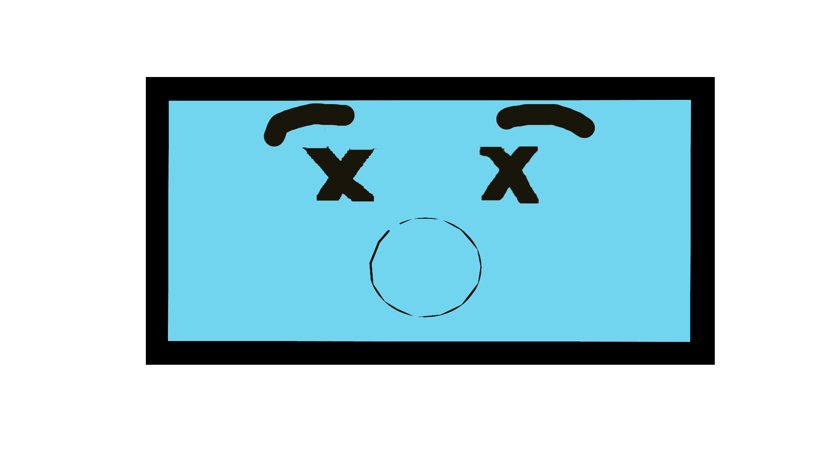
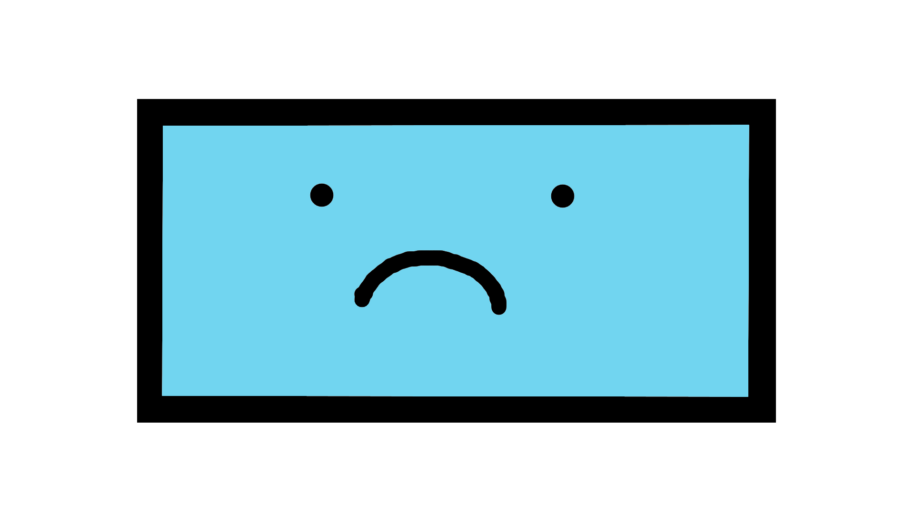

Oi, eu sou a internet, nasci em 1969, nos Estados Unidos. Meu apelido antigamente era Arpanet e eu tinha o objetivo de interligar laboratórios de pesquisa, mas fui crescendo e tomando espaço no mundo.
Sou controlada e regulada por muitos protocolos, um deles chamado de TCP/IP (Protocolo de Controle de Transmissão e Protocolo de Internet), que nasceu em 1975, já que eu estava evoluindo rápido e haviam muitas máquinas de diferentes estruturas (hardware) tentando se conectar.
Hoje, com mais idade, sou um artigo indispensável na vida de muita gente e possuo meus ajudantes, os Browsers.
Meu primeiro ajudante foi o World Wide Web (WWW)
e desde então surgiram vários outros como Mosaic, Netscape, Internet Explorer, Mozilla, Safari, Firefox
e Chrome respectivamente. Mas infelizmente alguns deles não têm mais tanto alcance para me ajudar.

Mas, apesar de quase todas as pessoas do mundo já terem utilizado a Internet, muitas não conhecem minha história ou não sabem como eu funciono para que tudo que as pessoas acessem atualmente seja possível.

Mostre para mim que você não é uma dessas pessoas! Jogue os jogos a seguir e prove seu conhecimento!